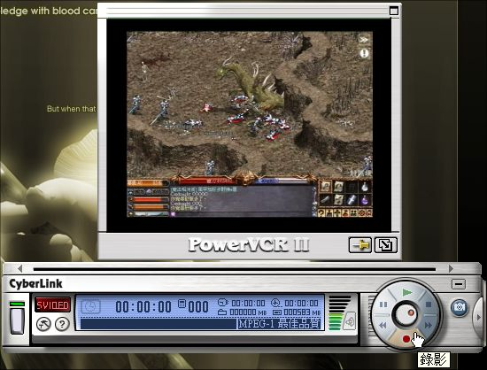
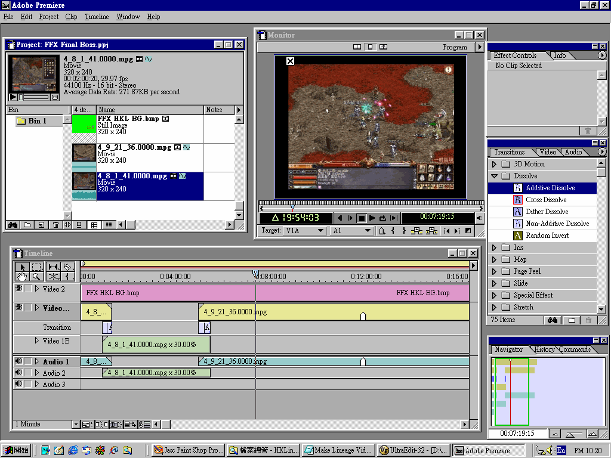
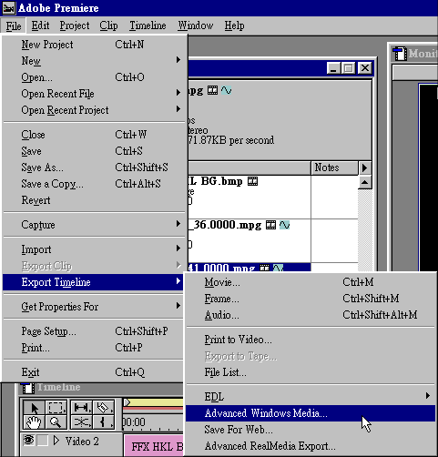
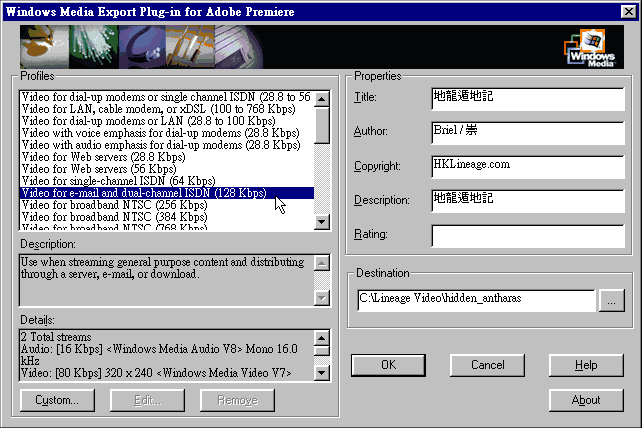

|
精華資料

製作天堂（或其他遊戲）的動畫檔教學
作者：Briel / 崇（Lineage3D.com網主）
首先，要擷取遊戲中的動畫基本上是需要兩部電腦或一部電腦加一部錄影機的，因為這幾乎沒有可能在同一電腦上，一邊玩遊戲一邊實時（每秒24格至30格）擷取640x480x16bits的動畫及聲音。而本人介紹的方法是比較經濟的，因此質素只能乎合在網上分享的要求。
所需器材：
1. 兩台電腦，一台有TV-Out功能，而另一部則有Video-In，或
一台有TV-Out及Video-In的電腦，及一台有影像輸入的錄影機；
2. Composite或S-Video Cable
3. Audio Cable
所需軟件：
擷取影像軟件如CyberLink PowerVCR，或其他擷取卡所提供的軟件
後期製作，加工和影像格式轉換軟件：
Adobe Premiere 6.0
擷取過程：
（本人是使用兩台電腦的方法）首先將各器材連接好，假如兩台電腦都有S-Video和S-Video
In，那麼便使用S-Video Cable連接，質素會比普通Composite
Cable高，而玩天堂一方的電腦的音效卡Line Out則用Audio
Cable連接另一台電腦音效卡的Line In。連接順利便可以測試擷取動畫，假如是使用n-Vidna系列的顯示卡的話請將Twin
View設定為On，那麼便可以在顯示器和TV-Out上同時顯示畫面，另外本人在TV-Out時會出現比較厚的黑框，這應該顯示卡TV-Out的問題。在擷取一小段動畫便首先要看動畫是否流暢，掉格情況大不大等，另外亦要將擷取動畫的聲音調較到正常水平。假如過程順利和設定正確的話便可以進行正式擷取。一般來說擷取的動畫都不會怎樣壓縮，所以檔案大小應該很大。本人喜歡使用CyberLink
PowerVCR(圖1)擷取動畫並實時轉換做MPEG1格式的，因為MPEG1格式比較容易處理。
後期製作：
本人主要是用Adobe Premiere 6.0(圖2)作為後期加工和格式轉換之用，在後期製作中主要是：
1. 加入圖框以隱藏原本醜陋的黑色外框
2. 加入網站圖標
3. 加入背景音樂
4. 加入字幕或文字描述
5. 加入過場效果（如淡入淡出）或其他特效
有關內容在這裡不詳述，套GM的一句話：請玩家自行摸索。
在後期加工完畢後便要將格式轉換為合適的格式，一般來說要放上網的話本人是會選擇Advanced
Windows Media格式的，在Adobe Premiere 6.0中已經內置了這個功能，大家只要在Premiere中選擇File->
Export Timeline-> Advanced Windows Media(圖3)便可以輸出做這個格式，在當中會有很多Profiles選撰，本人建議短的動畫（五分鐘以下）用Video
for broadband NTSC (256Kbps)，而較長的動畫則可考慮使用Video
for e-mail and dual-channel ISDN (128Kbps)(圖4)以節省資源。在製作完畢後當然是測試動畫能否正確播放，之後便要用軟件將動畫壓縮為ZIP格式以減少空間和方便下載。最後便可以放上網和大家分享了！
製作心得：
1.
在正式擷取前，可先擷取一小段動畫，以測試擷取的器材是否運作妥當。
2.
在擷取時最好先關閉遊戲中的背景音樂，在後期製作時才加回上去，以方便加入特殊效果。
3. 在Adobe Premiere Export動畫時最好不要做其他東西，否則可能會令程式中斷。
4.
在第一次製作時，即使是五分鐘的動畫亦可能會花5-10小時，主要是用作後期製作和反覆測試上，請耐心等候。
5. 在Premiere中按Alt及指著Timeline，便可以看到那一格片段在Render後的效果，不用花時間Preview。

圖1

圖2，可放大

圖3

圖4，可放大
|

{kind=link}
{kind=link}